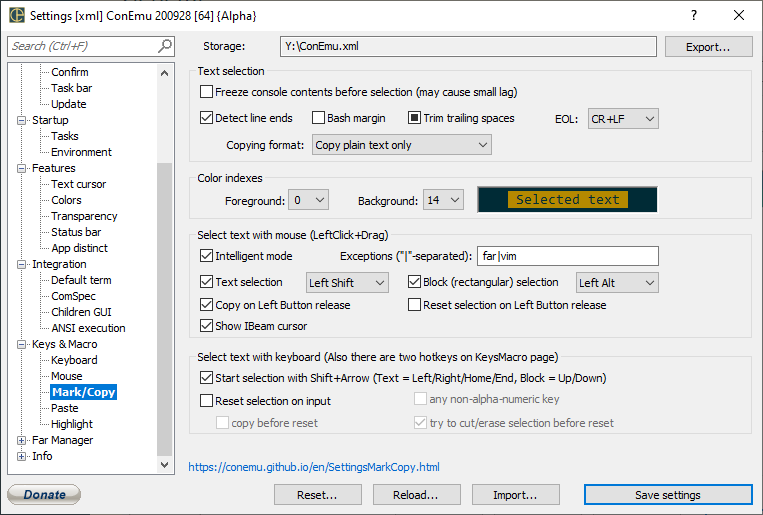

Freeze console contents before selection (may cause small lag)
Detect line ends Try to copy wrapped text as single line when possible (Text selection)
Bash margin Bash leave one space-character on the right edge of console when wrapping lines, skip these spaces when copying to clipboard
Trim trailing spaces 3rd-state means ‘Only for Text selection’
RTEXT
Choose preferred line separator (\r , or \r)
RTEXT
RTEXT
RTEXT
Intelligent mode
Exceptions ("|"-separated)
Text selection Enable streaming selection (like GUI text editors)
Block (rectangular) selection Enable rectangular selection (like standard Windows console)
Copy on Left Button release Copy immediately on left mouse button up (when selecting with mouse)
Choose modifier to starting ‘Text selection’ with mouse LeftClick+Drag
Show IBeam cursor Show IBeam (text selection) cursor when available and allowed by settings and key modifiers
Choose modifier to starting ‘Block selection’ with mouse LeftClick+Drag
Start selection with Shift+Arrow (Text = Left/Right/Home/End, Block = Up/Down) Start text selection with Shift+Left/Right/Home/End or block selection with Shift+Up/Down
Reset selection on input Reset selection region on keypress
any key When ‘Off’ - only characters ends selection When ‘On’ - any key ends selection (Arrows, PgUp, End, etc.)
copy before reset Copy selection to clipboard before selection region reset